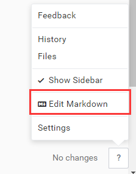
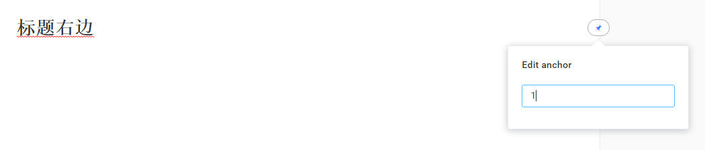

- 7.x版本打开显示MarkDown源码

- 如何插入同一页面的锚记，页面面内链接。
光标移至标题处，右边会出现锚记图标；输入锚记标识；点击"Insert Link"，输入锚记的标识即可。

- MarkDown不能关闭？
现象切换MarkDown中直接写了部分代码，发现预览已经改变了，但是MarkDown视图关闭不了；主界面中也无法再进行编辑 。
原因是 MarkDown中包含了部分GitBook Editor无法编辑的代码。 如“<br>”。 此时就代码到底吧
- Git仓库登录时无反应，
可能 的原因是用户名或密码错了，但是这个编辑器Bug有些多， 错误信息展示不出。仔细些！！
- 添加文章时中文名错误
Add Article时，若第一次输入中文名，会提示错误 。。 解决方法：1,升级到7.0.12及以后的版本 2、先输入英文，再重命名为中文。
- search-pro 手机中输入中文无法查询
输入拼音 人员，结果显示的搜索关键字是"ren yuan"；而直接粘贴是可以的，电脑上也是可以的。